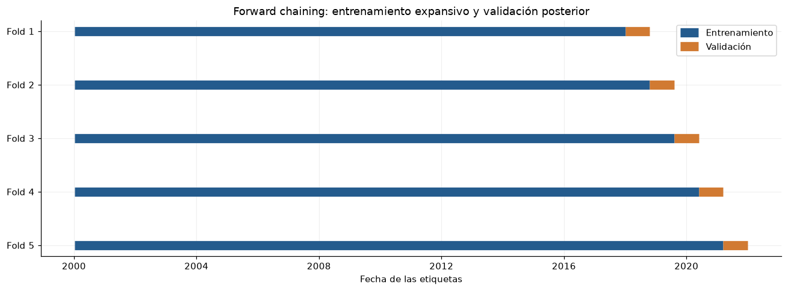

8. Partición, desplazamiento y controles de fuga#
El desarrollo 2000–2021 utiliza cinco folds de validación forward chaining. El periodo 2022–2025 queda fuera de los análisis de desarrollo. Los diagnósticos de este capítulo utilizan desarrollo y comprobaciones de calendario e integridad. La evaluación independiente de los modelos seleccionados requiere un protocolo específico.
Los contrastes entre 2000–2017 y 2018–2021 caracterizan el desplazamiento entre dos subperiodos disjuntos de desarrollo. Las etiquetas train y validation de sus tablas identifican ese contraste histórico; los cinco folds expansivos constituyen la partición activa del entrenamiento.
KS se presenta como distancia descriptiva sin su p-valor IID; Wasserstein se normaliza con el IQR de entrenamiento. El intervalo de la diferencia de medias usa bootstrap de bloques móviles de 30 días, con 199 réplicas y semilla fija. Supone estabilidad aproximada dentro de cada periodo y se interpreta como diagnóstico.
El pronóstico utiliza origen diario y salida directa de las siguientes 24 horas. El pipeline inicial y los conteos diagnósticos de calendario emplean 168 horas de contexto; la búsqueda posterior compara 24, 72, 168 y 336 horas sobre orígenes comunes determinados por la ventana máxima. Los conteos de ventanas sólo usan calendario: no leen valores de prueba. Los horizontes que atraviesan un corte se purgan. Los entrenamientos exploratorios se documentan en el capítulo de modelos; los experimentos confirmatorios restantes requieren un protocolo establecido antes de obtener nuevos resultados.
%matplotlib inline
from pathlib import Path
ROOT = next(
directory for directory in [Path.cwd(), *Path.cwd().parents]
if (directory / "data/manifest.json").exists()
)
from IPython.display import Markdown, display
from sklearn.preprocessing import StandardScaler
import collections
import datetime as dt
import hashlib
import json
import numpy as np
import pandas as pd
import matplotlib.pyplot as plt
import re
from scipy import signal, stats
SEED = 11037
TARGET = 'precio_bolsa_cop_kwh'
ALLOWED_SOURCES = {'El Tiempo', 'El Espectador', 'Semana', 'Portafolio', 'La República', 'El Colombiano', 'Dinero', 'IDEAM', 'XM'}
EDA_SPLITS = {'train': (2000, 2017), 'validation': (2018, 2021), 'test': (2022, 2025)}
SPLITS = EDA_SPLITS
TIME = 'timestamp_start_colombia'
RESULTS = ROOT / 'results'
WEATHER_PREFIXES = ('temperature_2m_c_', 'relative_humidity_2m_pct_', 'precipitation_preceding_hour_mm_')
CITIES = {'bogota', 'medellin', 'cali', 'barranquilla', 'cartagena', 'bucaramanga', 'pereira', 'cucuta'}
NUMERIC_E1 = {TARGET, 'demanda_real_kwh', 'demanda_comercial_kwh', 'llenado_valor_original', 'reserva_util_kwh', 'capacidad_util_kwh', 'aportes_kwh_dia'}
PIPELINE_DEFAULTS = {'method': 'split_train_val_forwardChaining', 'n_splits': 5, 'development_start': '2000-01-01T00:00:00-05:00', 'validation_start': '2018-01-01T00:00:00-05:00', 'development_end_exclusive': '2022-01-01T00:00:00-05:00', 'test_start': '2022-01-01T00:00:00-05:00', 'test_end_exclusive': '2026-01-01T00:00:00-05:00', 'lookback_hours': 168, 'horizon_hours': 24, 'stride_hours': 24, 'hourly_release_lag_hours': 24, 'hydrology_release_lag_days': 2, 'include_calendar': True, 'seed': 11037, 'availability_scenario': 'retrospective_assumed_release_lags'}
RESULTS.mkdir(exist_ok=True)
(RESULTS / 'figures').mkdir(exist_ok=True)
(RESULTS / 'tables').mkdir(exist_ok=True)
plt.rcParams.update({'figure.figsize': (11, 4.4), 'figure.dpi': 110, 'savefig.dpi': 160, 'axes.spines.top': False, 'axes.spines.right': False, 'axes.grid': True, 'grid.alpha': 0.18, 'axes.prop_cycle': plt.cycler(color=['#245b8d', '#d17a32', '#2b8c77', '#8c5da8', '#9a4949'])})
pd.set_option('display.max_rows', 35)
pd.set_option('display.max_columns', 14)
pd.set_option('display.float_format', lambda x: f'{x:.5g}')
def aware(value):
parsed = dt.datetime.fromisoformat(value.replace('Z', '+00:00'))
if parsed.tzinfo is None:
raise ValueError('Timestamp must have an explicit timezone')
return parsed
def eligible(record, origin):
cutoff = aware(origin)
if (record.get('source') or record.get('medium')) not in ALLOWED_SOURCES:
return False
if record.get('availability_status') != 'verified_archived_version':
return False
if record.get('availability_proof') != 'wayback_payload_digest_and_capture':
return False
clean_flag = record.get('quarantined', False) in (False, 0, None, '', '0', 'false', 'False')
if not re.fullmatch('[0-9a-f]{64}', record.get('version_sha256') or '') or not clean_flag:
return False
available = record.get('available_at_verified')
captured = record.get('capture_at_verified')
if not available or not captured:
return False
return aware(captured) <= aware(available) <= cutoff
def split_train_val_forwardChaining(sequence, numInputs, numOutputs, numJumps):
""" Returns sets to train and cross-validate a model using forward chaining technique
Parameters:
sequence (array) : Full training dataset
numInputs (int) : Number of inputs X and Xcv used at each training and validation
numOutputs (int) : Number of outputs y and ycv used at each training and validation
numJumps (int) : Number of sequence samples to be ignored between (X,y) sets
Returns:
X (2D array) : Array of numInputs arrays used for training
y (2D array) : Array of numOutputs arrays used for training
Xcv (2D array) : Array of numInputs arrays used for cross-validation
ycv (2D array) : Array of numOutputs arrays used for cross-validation
Fuente: timeseries-cv 0.1.5; licencia original:
MIT License
Copyright (c) 2021 DidierRLopes
Permission is hereby granted, free of charge, to any person obtaining a copy
of this software and associated documentation files (the "Software"), to deal
in the Software without restriction, including without limitation the rights
to use, copy, modify, merge, publish, distribute, sublicense, and/or sell
copies of the Software, and to permit persons to whom the Software is
furnished to do so, subject to the following conditions:
The above copyright notice and this permission notice shall be included in all
copies or substantial portions of the Software.
THE SOFTWARE IS PROVIDED "AS IS", WITHOUT WARRANTY OF ANY KIND, EXPRESS OR
IMPLIED, INCLUDING BUT NOT LIMITED TO THE WARRANTIES OF MERCHANTABILITY,
FITNESS FOR A PARTICULAR PURPOSE AND NONINFRINGEMENT. IN NO EVENT SHALL THE
AUTHORS OR COPYRIGHT HOLDERS BE LIABLE FOR ANY CLAIM, DAMAGES OR OTHER
LIABILITY, WHETHER IN AN ACTION OF CONTRACT, TORT OR OTHERWISE, ARISING FROM,
OUT OF OR IN CONNECTION WITH THE SOFTWARE OR THE USE OR OTHER DEALINGS IN THE
SOFTWARE.
The MIT License (MIT)
Copyright (c) 2019 Didier Rodrigues Lopes
Permission is hereby granted, free of charge, to any person obtaining a copy
of this software and associated documentation files (the "Software"), to deal
in the Software without restriction, including without limitation the rights
to use, copy, modify, merge, publish, distribute, sublicense, and/or sell
copies of the Software, and to permit persons to whom the Software is
furnished to do so, subject to the following conditions:
The above copyright notice and this permission notice shall be included in all
copies or substantial portions of the Software.
THE SOFTWARE IS PROVIDED "AS IS", WITHOUT WARRANTY OF ANY KIND, EXPRESS OR
IMPLIED, INCLUDING BUT NOT LIMITED TO THE WARRANTIES OF MERCHANTABILITY,
FITNESS FOR A PARTICULAR PURPOSE AND NONINFRINGEMENT. IN NO EVENT SHALL THE
AUTHORS OR COPYRIGHT HOLDERS BE LIABLE FOR ANY CLAIM, DAMAGES OR OTHER
LIABILITY, WHETHER IN AN ACTION OF CONTRACT, TORT OR OTHERWISE, ARISING FROM,
OUT OF OR IN CONNECTION WITH THE SOFTWARE OR THE USE OR OTHER DEALINGS IN THE
SOFTWARE.
"""
X, y, Xcv, ycv = (dict(), dict(), dict(), dict())
j = 2
while 1:
start_ix = 0
end_ix = 0
startCv_ix = 0
endCv_ix = 0
X_it, y_it, Xcv_it, ycv_it = (list(), list(), list(), list())
i = 0
while i < j:
start_ix = numJumps * i
end_ix = start_ix + numInputs
seq_x = sequence[start_ix:end_ix]
X_it.append(seq_x)
seq_y = sequence[end_ix:end_ix + numOutputs]
y_it.append(seq_y)
i += 1
if end_ix + numInputs + numOutputs > len(sequence):
break
startCv_ix = end_ix
endCv_ix = end_ix + numInputs
seq_xcv = sequence[startCv_ix:endCv_ix]
Xcv_it.append(seq_xcv)
seq_ycv = sequence[endCv_ix:endCv_ix + numOutputs]
ycv_it.append(seq_ycv)
X[j - 2] = np.array(X_it)
y[j - 2] = np.array(y_it)
Xcv[j - 2] = np.array(Xcv_it)
ycv[j - 2] = np.array(ycv_it)
j += 1
if len(X) == 0 or len(Xcv) == 0:
print('The sequence provided does not has size enough to populate the return arrays')
return (X, y, Xcv, ycv)
def validate_development_index(index, config):
index = pd.DatetimeIndex(index)
if index.tz is None:
raise ValueError('El índice debe tener zona horaria.')
index = index.tz_convert('America/Bogota')
if len(index) < 2 or not index.is_monotonic_increasing or index.has_duplicates:
raise ValueError('Índice temporal desordenado, duplicado o insuficiente.')
if not np.all(np.diff(index.as_unit('ns').asi8) == pd.Timedelta(hours=1).value):
raise ValueError('El calendario horario contiene huecos.')
if index[0] < pd.Timestamp(config['development_start']) or index[-1] >= pd.Timestamp(config['development_end_exclusive']):
raise PermissionError('La preparación sólo admite el periodo de desarrollo.')
return index
def forward_chaining_folds(index, config, input_usable=None, target_usable=None):
"""Plan temporal por bloques; ventanas supervisadas completas y sin etiquetas compartidas."""
index = validate_development_index(index, config)
length = len(index)
lookback = config['lookback_hours']
horizon = config['horizon_hours']
origins = np.arange(lookback, length - horizon + 1, config['stride_hours'], dtype=np.int64)
origins = origins[index[origins].hour == 0]
if input_usable is not None:
flags = np.asarray(input_usable, dtype=bool)
if flags.shape != (length,):
raise ValueError('Máscara de entradas incompatible')
bad = np.r_[0, np.cumsum(~flags)]
origins = origins[bad[origins] - bad[origins - lookback] == 0]
if target_usable is not None:
flags = np.asarray(target_usable, dtype=bool)
if flags.shape != (length,):
raise ValueError('Máscara de etiquetas incompatible')
bad = np.r_[0, np.cumsum(~flags)]
origins = origins[bad[origins + horizon] - bad[origins] == 0]
initial = origins[index[origins] < pd.Timestamp(config['validation_start'])]
eligible = origins[index[origins] >= pd.Timestamp(config['validation_start'])]
if len(initial) < 3 or len(eligible) < config['n_splits']:
raise ValueError('Datos insuficientes para los folds.')
validation_blocks = np.array_split(eligible, config['n_splits'])
train_x, train_y, val_x, val_y = split_train_val_forwardChaining(np.arange(config['n_splits'] + 3), 1, 1, 1)
if len(val_y) != config['n_splits']:
raise AssertionError('Número inesperado de folds del backend')
folds = []
for key in sorted(val_y):
block = int(val_y[key].ravel()[0])
block_id = block - 3
past_blocks = np.unique(np.r_[train_x[key].ravel(), train_y[key].ravel()])
if past_blocks.max() >= block:
raise AssertionError('El backend incluyó bloques futuros')
start = int(validation_blocks[block_id][0])
stop = int(validation_blocks[block_id + 1][0]) if block_id + 1 < len(validation_blocks) else length
train = origins[origins + horizon <= start]
validation = validation_blocks[block_id]
validation = validation[validation + horizon <= stop]
if not len(train) or not len(validation):
raise ValueError('Fold vacío tras la purga de etiquetas')
assert train[-1] + horizon <= validation[0]
digest = hashlib.sha256(train.astype('<i8').tobytes() + validation.astype('<i8').tobytes()).hexdigest()
folds.append(dict(fold=len(folds) + 1, train_origins=train, validation_origins=validation, validation_block=block, indices_sha256=digest))
return folds
def load_numeric(split='train', table='hourly', *, allow_test=False):
if split not in SPLITS:
raise ValueError('Unknown split')
if split == 'test' and (not allow_test):
raise PermissionError('El EDA no puede consultar valores de prueba.')
a, b = SPLITS[split]
folder = 'hourly' if table == 'hourly' else 'hydrology'
frame = pd.concat([pd.read_csv(ROOT / f'data/numeric/{folder}/{year}.csv.gz') for year in range(a, b + 1)], ignore_index=True)
if table == 'hourly':
frame.index = pd.DatetimeIndex(pd.to_datetime(frame[TIME], utc=True)).tz_convert('America/Bogota')
else:
frame.index = pd.DatetimeIndex(pd.to_datetime(frame['date'])).tz_localize('America/Bogota')
frame.index.name = 'tiempo_colombia'
return frame
def load_development_data(table='hourly'):
return pd.concat([load_numeric('train', table=table), load_numeric('validation', table=table)]).sort_index()
def assert_e1_features(names):
for name in names:
if name in NUMERIC_E1:
continue
if any((name == prefix + city for prefix in WEATHER_PREFIXES for city in CITIES)):
continue
if name in {'hour_sin', 'hour_cos', 'week_sin', 'week_cos', 'year_sin', 'year_cos'}:
continue
raise ValueError('E1 sólo admite las variables numéricas declaradas: ' + name)
return True
def numeric_feature_frame(hourly, hydrology, config):
index = validate_development_index(hourly.index, config)
if not hydrology.index.is_monotonic_increasing or hydrology.index.has_duplicates:
raise ValueError('Índice hidrológico no válido.')
if hydrology.index.tz is None or (len(hydrology) and hydrology.index[-1] >= pd.Timestamp(config['development_end_exclusive'])):
raise PermissionError('Hidrología fuera del periodo de desarrollo o sin zona horaria.')
columns = [TARGET, 'demanda_real_kwh', 'demanda_comercial_kwh']
columns += sorted((c for c in hourly.columns if c.startswith(WEATHER_PREFIXES)))
features = hourly[columns].shift(config['hourly_release_lag_hours']).copy()
hydro_columns = ['llenado_valor_original', 'reserva_util_kwh', 'capacidad_util_kwh', 'aportes_kwh_dia']
released = hydrology[hydro_columns].copy()
released.index = released.index + pd.Timedelta(days=config['hydrology_release_lag_days'])
features = features.join(released.reindex(index, method='ffill'))
if config['include_calendar']:
phases = {'hour': index.hour / 24, 'week': (index.day_of_week + index.hour / 24) / 7, 'year': (index.day_of_year - 1 + index.hour / 24) / np.where(index.is_leap_year, 366, 365)}
for name, phase in phases.items():
features[name + '_sin'] = np.sin(2 * np.pi * phase)
features[name + '_cos'] = np.cos(2 * np.pi * phase)
assert_e1_features(features.columns)
return features
def pipeline_config(overrides=None):
config = dict(PIPELINE_DEFAULTS)
if overrides:
unknown = set(overrides) - set(config)
if unknown:
raise ValueError('Opciones desconocidas: ' + str(sorted(unknown)))
config.update(overrides)
for field in ['n_splits', 'lookback_hours', 'horizon_hours', 'stride_hours']:
if not isinstance(config[field], int) or isinstance(config[field], bool) or config[field] < 1:
raise ValueError('Se requiere un entero positivo: ' + field)
for field in ['hourly_release_lag_hours', 'hydrology_release_lag_days']:
if not isinstance(config[field], int) or isinstance(config[field], bool) or config[field] < 0:
raise ValueError('Rezago inválido: ' + field)
if config['hydrology_release_lag_days'] < 1:
raise ValueError('La hidrología diaria requiere al menos el cierre del día.')
for field in ['development_start', 'validation_start', 'development_end_exclusive', 'test_start', 'test_end_exclusive']:
if pd.Timestamp(config[field]).tzinfo is None:
raise ValueError('Se requiere zona horaria: ' + field)
if config['method'] != 'split_train_val_forwardChaining':
raise ValueError('Método no autorizado')
if pd.Timestamp(config['test_start']) != pd.Timestamp(PIPELINE_DEFAULTS['test_start']) or config['test_end_exclusive'] != PIPELINE_DEFAULTS['test_end_exclusive']:
raise ValueError('El periodo de prueba está congelado.')
if not pd.Timestamp(config['development_start']) < pd.Timestamp(config['validation_start']) < pd.Timestamp(config['development_end_exclusive']) <= pd.Timestamp(config['test_start']):
raise ValueError('Cortes temporales inválidos')
if config['stride_hours'] % 24:
raise ValueError('Los orígenes deben conservar el paso diario.')
return config
def build_training_pipeline(config=None, hourly=None, hydrology=None):
config = pipeline_config(config)
hourly = load_development_data() if hourly is None else hourly
hydrology = load_development_data('hydrology') if hydrology is None else hydrology
features = numeric_feature_frame(hourly, hydrology, config)
target = hourly[TARGET].copy()
usable = np.isfinite(features.to_numpy()).all(axis=1)
folds = forward_chaining_folds(features.index, config, usable, np.isfinite(target.to_numpy()))
return dict(config=config, features=features, target=target, folds=folds)
def load_pipeline_config(path=None):
path = ROOT / 'configs/training_pipeline.json' if path is None else path
return pipeline_config(json.loads(path.read_text(encoding='utf-8')))
def pipeline_fold_summary(pipeline):
rows = []
index = pipeline['features'].index
horizon = pipeline['config']['horizon_hours']
for fold in pipeline['folds']:
train = fold['train_origins']
validation = fold['validation_origins']
rows.append(dict(fold=fold['fold'], train_start=index[train[0]], train_end_exclusive=index[train[-1]] + pd.Timedelta(hours=horizon), validation_start=index[validation[0]], validation_end_exclusive=index[validation[-1]] + pd.Timedelta(hours=horizon), train_windows=len(train), validation_windows=len(validation), indices_sha256=fold['indices_sha256']))
return pd.DataFrame(rows).set_index('fold')
def prepare_fold_arrays(pipeline, fold):
features = pipeline['features']
target = pipeline['target'].to_numpy()
config = pipeline['config']
lookback = config['lookback_hours']
horizon = config['horizon_hours']
train = fold['train_origins']
validation = fold['validation_origins']
train_positions = train[:, None] - lookback + np.arange(lookback)
validation_positions = validation[:, None] - lookback + np.arange(lookback)
train_rows = np.unique(train_positions)
validation_rows = np.unique(validation_positions)
scaler = StandardScaler().fit(features.iloc[train_rows])
scaled_train = scaler.transform(features.iloc[train_rows]).astype(np.float32)
scaled_validation = scaler.transform(features.iloc[validation_rows]).astype(np.float32)
X_train = scaled_train[np.searchsorted(train_rows, train_positions)]
X_validation = scaled_validation[np.searchsorted(validation_rows, validation_positions)]
y_train = target[train[:, None] + np.arange(horizon)].astype(np.float32)
y_validation = target[validation[:, None] + np.arange(horizon)].astype(np.float32)
assert features.index[train_rows[-1]] < features.index[validation[0]]
return dict(fold=fold['fold'], X_train=X_train, y_train=y_train, X_validation=X_validation, y_validation=y_validation, feature_scaler=scaler, feature_names=list(features.columns), train_origins=features.index[train], validation_origins=features.index[validation], scaler_fit_rows=len(train_rows), scaler_fit_start=features.index[train_rows[0]], scaler_fit_end=features.index[train_rows[-1]], target_units='COP/kWh')
def run_forward_chaining(pipeline, model_factory, fit_model, evaluate_model, seeds=(11037,)):
"""Extensión para modelos futuros: una instancia nueva por fold y semilla."""
if not seeds:
raise ValueError('Se requiere al menos una semilla.')
rows = []
for fold in pipeline['folds']:
batch = prepare_fold_arrays(pipeline, fold)
for seed in seeds:
model = model_factory(seed=seed, n_features=len(batch['feature_names']), horizon=pipeline['config']['horizon_hours'])
fitted = fit_model(model, batch, seed=seed)
scores = evaluate_model(model if fitted is None else fitted, batch)
rows.append(dict(fold=fold['fold'], seed=seed, **scores))
del batch
return pd.DataFrame(rows)
def split_for_labels(start, end_exclusive):
start = pd.Timestamp(start)
end = pd.Timestamp(end_exclusive)
if start.tzinfo is None or end.tzinfo is None:
raise ValueError('Se requiere zona horaria.')
for name, (a, b) in SPLITS.items():
left = pd.Timestamp(f'{a}-01-01', tz='America/Bogota')
right = pd.Timestamp(f'{b + 1}-01-01', tz='America/Bogota')
if left <= start < end <= right:
return name
return 'purged'
def eligible_retrospective(record, origin):
"""Escenario autorizado: fecha declarada, SIN certificar versión histórica."""
cutoff = aware(origin)
if (record.get('source') or record.get('medium')) not in ALLOWED_SOURCES:
return False
if record.get('quarantined', False) not in (False, 0, None, '', '0', 'false', 'False'):
return False
assumed = record.get('available_at_assumed')
if not assumed or record.get('assumed_availability_basis') not in {'declared_timestamp_unverified_version', 'next_day_after_declared_date_unverified_version'}:
return False
return aware(assumed) <= cutoff
def select_before_origin(records, origin, scenario='verified'):
aware(origin)
if scenario not in {'verified', 'declared_dates'}:
raise ValueError('Choose verified or declared_dates explicitly')
rule = eligible if scenario == 'verified' else eligible_retrospective
field = 'available_at_verified' if scenario == 'verified' else 'available_at_assumed'
selected = [r for r in records if rule(r, origin)]
return sorted(selected, key=lambda r: (aware(r[field]), r['id']))
def verify_guards():
good = dict(id='a', source='IDEAM', availability_status='verified_archived_version', availability_proof='wayback_payload_digest_and_capture', version_sha256='a' * 64, capture_at_verified='2020-12-15T10:00:00-05:00', available_at_verified='2020-12-15T10:00:00-05:00', publication_date_claimed='2020-12-01', reference_period='2021-01')
assert eligible(good, '2020-12-15T10:00:00-05:00')
assert not eligible(good, '2020-12-15T09:59:59-05:00')
assert eligible(good, '2020-12-15T15:00:00+00:00')
assert not eligible(dict(good, source='El Heraldo'), '2025-01-01T00:00:00-05:00')
assert not eligible(dict(good, availability_status='unverified'), '2025-01-01T00:00:00-05:00')
assert not eligible(dict(good, available_at_verified=None, available_at_assumed='2020-12-02T00:00:00-05:00'), '2021-01-01T00:00:00-05:00')
assert not eligible(dict(good, capture_at_verified='2026-11-03T00:00:00-05:00', available_at_verified='2026-11-03T00:00:00-05:00'), '2021-01-01T00:00:00-05:00')
assert not eligible(dict(good, quarantined=True), '2025-01-01T00:00:00-05:00')
assert eligible(dict(good, quarantined='0'), '2020-12-15T10:00:00-05:00')
assert not eligible(dict(good, quarantined='1'), '2025-01-01T00:00:00-05:00')
assert not eligible(dict(good, version_sha256='not-a-hash'), '2025-01-01T00:00:00-05:00')
declared = dict(good, availability_status='historical_version_unverified', available_at_verified=None, capture_at_verified=None, version_sha256=None, available_at_assumed='2020-12-02T00:00:00-05:00', assumed_availability_basis='next_day_after_declared_date_unverified_version')
assert eligible_retrospective(declared, '2020-12-02T00:00:00-05:00')
assert not eligible_retrospective(declared, '2020-12-01T23:59:59-05:00')
assert not eligible(declared, '2025-01-01T00:00:00-05:00')
assert not eligible_retrospective(dict(declared, available_at_assumed=None), '2025-01-01T00:00:00-05:00')
assert [r['id'] for r in select_before_origin([declared], '2020-12-02T00:00:00-05:00', 'declared_dates')] == ['a']
try:
select_before_origin([good], '2020-12-15T10:00:00')
except ValueError:
pass
else:
raise AssertionError('Naive origin accepted')
assert [r['id'] for r in select_before_origin([dict(good, id='b'), good], '2020-12-15T10:00:00-05:00')] == ['a', 'b']
print('OK: versiones, captura, fechas futuras, supuestos, fuentes excluidas y zona horaria.')
train = load_numeric()
valid = load_numeric('validation')
rows = []
for split, frame in [('train', train), ('validation', valid)]:
for c in [TARGET, 'demanda_real_kwh', 'temperature_2m_c_bogota', 'relative_humidity_2m_pct_barranquilla']:
x = frame[c]
rows.append(dict(particion=split, variable=c, n=len(x), media=x.mean(), mediana=x.median(), sd=x.std(), p01=x.quantile(0.01), p99=x.quantile(0.99)))
table(pd.DataFrame(rows).set_index(['variable', 'particion']), 'distribuciones_train_validacion')
| n | media | mediana | sd | p01 | p99 | ||
|---|---|---|---|---|---|---|---|
| variable | particion | ||||||
| precio_bolsa_cop_kwh | train | 157800 | 124.56 | 84.405 | 140.41 | 28.794 | 822.44 |
| demanda_real_kwh | train | 157800 | 6.1907e+06 | 6.1196e+06 | 1.3957e+06 | 3.396e+06 | 9.064e+06 |
| temperature_2m_c_bogota | train | 157800 | 14.903 | 14.1 | 3.4963 | 9.1 | 22.7 |
| relative_humidity_2m_pct_barranquilla | train | 157800 | 82.437 | 85 | 12.399 | 49 | 99 |
| precio_bolsa_cop_kwh | validation | 35064 | 186.48 | 155.21 | 107.04 | 67.955 | 502.3 |
| demanda_real_kwh | validation | 35064 | 8.0435e+06 | 8.0947e+06 | 1.1141e+06 | 5.908e+06 | 1.0057e+07 |
| temperature_2m_c_bogota | validation | 35064 | 14.797 | 14.1 | 3.2458 | 8.9 | 21.7 |
| relative_humidity_2m_pct_barranquilla | validation | 35064 | 80.729 | 83 | 12.893 | 47 | 99 |
shifts = []
for c in [TARGET, 'demanda_real_kwh', 'demanda_comercial_kwh', 'temperature_2m_c_bogota', 'relative_humidity_2m_pct_barranquilla']:
a = train[c].resample('D').mean().to_numpy()
b = valid[c].resample('D').mean().to_numpy()
scale = np.quantile(a, 0.75) - np.quantile(a, 0.25)
shifts.append(dict(variable=c, ks_D_descriptivo=stats.ks_2samp(a, b).statistic, wasserstein_div_IQR_train=stats.wasserstein_distance(a, b) / scale, diferencia_media_div_sd_train=(b.mean() - a.mean()) / a.std()))
table(pd.DataFrame(shifts).set_index('variable'), 'desplazamiento_train_validacion')
| ks_D_descriptivo | wasserstein_div_IQR_train | diferencia_media_div_sd_train | |
|---|---|---|---|
| variable | |||
| precio_bolsa_cop_kwh | 0.44691 | 0.96208 | 0.44921 |
| demanda_real_kwh | 0.70806 | 1.1718 | 1.835 |
| demanda_comercial_kwh | 0.70631 | 1.1649 | 1.8283 |
| temperature_2m_c_bogota | 0.039557 | 0.09566 | -0.12368 |
| relative_humidity_2m_pct_barranquilla | 0.10834 | 0.1583 | -0.25779 |
a = train[TARGET].resample('D').mean().to_numpy()
b = valid[TARGET].resample('D').mean().to_numpy()
rng = np.random.default_rng(SEED)
block = 30
def resample(x):
starts = rng.integers(0, len(x) - block + 1, size=int(np.ceil(len(x) / block)))
return np.concatenate([x[i:i + block] for i in starts])[:len(x)]
diffs = np.array([resample(b).mean() - resample(a).mean() for _ in range(199)])
table(pd.DataFrame({'diferencia_media_COP_kWh': [b.mean() - a.mean()], 'IC95_bloques_inferior': [np.quantile(diffs, 0.025)], 'IC95_bloques_superior': [np.quantile(diffs, 0.975)], 'dias_bloque': [block], 'replicas': [199]}), 'bootstrap_shift_train_validacion')
| diferencia_media_COP_kWh | IC95_bloques_inferior | IC95_bloques_superior | dias_bloque | replicas | |
|---|---|---|---|---|---|
| 0 | 61.918 | 31.047 | 93.127 | 30 | 199 |
fig, ax = plt.subplots()
for name, frame in [('Entrenamiento', train), ('Validación', valid)]:
x = np.sort(frame[TARGET].to_numpy())
ax.plot(x, np.arange(1, len(x) + 1) / len(x), label=name)
ax.set(xlabel='COP/kWh', ylabel='Distribución acumulada', title='Desplazamiento visible sin consultar prueba')
ax.legend()
figure(fig, 'shift_train_validacion')

calendar = pd.date_range('2000-01-01', '2026-01-01', freq='h', inclusive='left', tz='America/Bogota')
origins = calendar[168:-23]
origins = origins[origins.hour == 0]
labels = collections.Counter((split_for_labels(t, t + pd.Timedelta(hours=24)) for t in origins))
table(pd.Series(labels, name='origenes_candidatos_calendario').to_frame(), 'ventanas_calendario_sin_leer_prueba')
| origenes_candidatos_calendario | |
|---|---|
| train | 6568 |
| validation | 1461 |
| test | 1461 |
tests = []
verify_guards()
try:
load_numeric('test')
except PermissionError:
tests.append(('carga de prueba bloqueada por defecto', True))
else:
raise AssertionError('Test access allowed')
assert split_for_labels('2017-12-31T12:00:00-05:00', '2018-01-01T12:00:00-05:00') == 'purged'
tests.append(('horizonte que cruza corte eliminado', True))
table(pd.DataFrame(tests, columns=['control', 'pasa']).set_index('control'), 'controles_fuga')
OK: versiones, captura, fechas futuras, supuestos, fuentes excluidas y zona horaria.
| pasa | |
|---|---|
| control | |
| carga de prueba bloqueada por defecto | True |
| horizonte que cruza corte eliminado | True |
El estadístico KS se presenta sin su p-valor IID: los días son dependientes. Wasserstein es un tamaño de desplazamiento, no prueba causal. El bootstrap de bloques conserva dependencia local y presupone estabilidad aproximada dentro de cada periodo; no corrige cambios estructurales por sí solo. Las ventanas se cuentan desde el calendario, sin leer los valores de prueba.
Implicaciones del análisis
Preprocesamiento: Ajustar toda transformación sólo con train. Si se recalibra con origen móvil, usar únicamente datos anteriores al origen y una política cerrada antes de prueba.
Arquitectura: Comparar capacidad de adaptación de modelos con el mismo presupuesto; no seleccionar una red con estas estadísticas de validación.
Validación: Prueba congelada; sólo integridad/calendario/cobertura. Contexto pasado puede atravesar el corte, etiquetas futuras no. Origen es inicio del intervalo a pronosticar.
Riesgos: El uso exploratorio de validación y la incertidumbre sobre disponibilidad y revisiones deben incorporarse a la interpretación de la evaluación predictiva.
8.1 Pipeline de validación forward chaining#
La función split_train_val_forwardChaining de timeseries-cv 0.1.5 organiza una secuencia de bloques temporales. Los bloques se traducen a orígenes diarios de pronóstico: el entrenamiento se amplía con cada fold y la validación corresponde siempre a un periodo posterior. Se conservan únicamente ventanas cuyas etiquetas están completas dentro del bloque asignado.
La configuración inicial comprende 168 horas de contexto, un horizonte de 24 horas y un paso de 24 horas entre orígenes. La búsqueda compara longitudes de historia de 24, 72, 168 y 336 horas, conservando los bloques temporales y utilizando orígenes comunes. Los contextos seleccionados son 24 horas para MLP y CNN1D y 72 horas para LSTM. La preparación incorpora un rezago supuesto de publicación de 24 horas para variables horarias y dos días para hidrología. Cada escalador se ajusta exclusivamente con las filas usadas en las entradas de entrenamiento de su fold. Las etiquetas se conservan en COP/kWh.
El pipeline admite funciones de construcción, ajuste y evaluación de modelos, con una instancia nueva por fold y semilla. Los parámetros y los artefactos de preparación se registran en configs/training_pipeline.json y results/pipeline/. Fuente del método.
training_pipeline = build_training_pipeline(load_pipeline_config())
folds = pipeline_fold_summary(training_pipeline)
table(folds, 'forward_chaining_folds')
| train_start | train_end_exclusive | validation_start | validation_end_exclusive | train_windows | validation_windows | indices_sha256 | |
|---|---|---|---|---|---|---|---|
| fold | |||||||
| 1 | 2000-01-10 00:00:00-05:00 | 2018-01-01 00:00:00-05:00 | 2018-01-01 00:00:00-05:00 | 2018-10-21 00:00:00-05:00 | 6566 | 293 | 6fa9dd803520960d6490f346faa559001ef4ad70e55d92... |
| 2 | 2000-01-10 00:00:00-05:00 | 2018-10-21 00:00:00-05:00 | 2018-10-21 00:00:00-05:00 | 2019-08-09 00:00:00-05:00 | 6859 | 292 | 014e7386223c308087ce1e13a0c24a12c241c13e357dce... |
| 3 | 2000-01-10 00:00:00-05:00 | 2019-08-09 00:00:00-05:00 | 2019-08-09 00:00:00-05:00 | 2020-05-27 00:00:00-05:00 | 7151 | 292 | 2c196fa925cb7ad23ad42a53d361166798b640a1ebfaea... |
| 4 | 2000-01-10 00:00:00-05:00 | 2020-05-27 00:00:00-05:00 | 2020-05-27 00:00:00-05:00 | 2021-03-15 00:00:00-05:00 | 7443 | 292 | 14c6e0b6eea5f896b0f3e824f9ce903a261aa518a36ca5... |
| 5 | 2000-01-10 00:00:00-05:00 | 2021-03-15 00:00:00-05:00 | 2021-03-15 00:00:00-05:00 | 2022-01-01 00:00:00-05:00 | 7735 | 292 | 7f4d1acbc3747a56c26949acb1a6be78aec540a94fc922... |
fig, ax = plt.subplots(figsize=(12, 4.5))
for i, (_, row) in enumerate(folds.iterrows()):
ax.plot([row['train_start'], row['train_end_exclusive']], [i, i], lw=10, color='#245b8d', label='Entrenamiento' if i == 0 else None, solid_capstyle='butt')
ax.plot([row['validation_start'], row['validation_end_exclusive']], [i, i], lw=10, color='#d17a32', label='Validación' if i == 0 else None, solid_capstyle='butt')
ax.set_yticks(range(len(folds)), ['Fold ' + str(f) for f in folds.index])
ax.invert_yaxis()
ax.set(xlabel='Fecha de las etiquetas', title='Forward chaining: entrenamiento expansivo y validación posterior')
ax.legend()
figure(fig, 'forward_chaining_folds')

batch = prepare_fold_arrays(training_pipeline, training_pipeline['folds'][0])
preparation = pd.DataFrame([dict(fold=batch['fold'], entradas_entrenamiento=str(batch['X_train'].shape), etiquetas_entrenamiento=str(batch['y_train'].shape), entradas_validacion=str(batch['X_validation'].shape), etiquetas_validacion=str(batch['y_validation'].shape), filas_ajuste_escalador=batch['scaler_fit_rows'], inicio_ajuste=batch['scaler_fit_start'], fin_ajuste=batch['scaler_fit_end'])])
table(preparation.set_index('fold'), 'forward_chaining_preprocessing_example')
| entradas_entrenamiento | etiquetas_entrenamiento | entradas_validacion | etiquetas_validacion | filas_ajuste_escalador | inicio_ajuste | fin_ajuste | |
|---|---|---|---|---|---|---|---|
| fold | |||||||
| 1 | (6566, 168, 37) | (6566, 24) | (293, 168, 37) | (293, 24) | 157728 | 2000-01-03 00:00:00-05:00 | 2017-12-30 23:00:00-05:00 |
del batch
def train_reference_models(model_factory, fit_model, evaluate_model, seeds):
return run_forward_chaining(training_pipeline, model_factory, fit_model, evaluate_model, seeds)
Implicaciones del análisis
Preprocesamiento: Alinear las covariables con sus fechas de disponibilidad supuestas y ajustar el escalado con las entradas de entrenamiento de cada fold.
Arquitectura: Mantener una interfaz común de ventanas multivariadas y salida directa de 24 horas para los modelos de referencia.
Validación: Aplicar cinco folds forward chaining sobre desarrollo 2000–2021; reservar 2022–2025 para la evaluación final.
Riesgos: Los rezagos de publicación constituyen supuestos retrospectivos; su sensibilidad debe evaluarse antes de interpretar un desempeño operativo.
8.2 Métrica principal y criterio de comparación#
El error absoluto medio (MAE), expresado en COP/kWh, es la métrica principal del benchmark. La referencia numérica se selecciona por el menor MAE medio entre inicializaciones, evaluado sobre los mismos orígenes diarios y las mismas 24 horas objetivo. RMSE y R² se conservan como métricas secundarias para caracterizar errores grandes y variación explicada.
Para una semilla \(r\) y el conjunto \(\mathcal O\) de orígenes de validación de los cinco folds,
Cada hora objetivo recibe el mismo peso; los folds contribuyen según su número de observaciones. Se calcula la métrica de cada semilla y después su media y desviación estándar. Esta agregación difiere de promediar predicciones para formar un ensemble; la desviación entre semillas caracteriza la inicialización y no equivale a un intervalo de confianza temporal.
Fundamento bibliográfico. Ugurlu et al. (2018, §4.1) adoptan el MAE como criterio de evaluación del pronóstico eléctrico. Lago et al. (2021, §5.4) señalan que las pérdidas lineales representan mejor determinados riesgos y costos del error de precio que las pérdidas cuadráticas, y advierten sobre la inestabilidad de MAPE cuando el precio se aproxima a cero. En este estudio, el MAE permite interpretar directamente la magnitud media del error en COP/kWh y penaliza linealmente las desviaciones. RMSE complementa esa lectura mediante una mayor ponderación de errores grandes. El MAE no representa por sí solo el costo monetario de una operación, que también depende del volumen y de la estrategia comercial.
Lago et al. recomiendan además acompañar los errores absolutos con una referencia relativa. La comparación existente utiliza el pronóstico semanal \(\widehat y^{\mathrm{sem}}_{o,h}=y_{o+h-168}\) sobre los mismos orígenes. Su reducción porcentual del MAE es \(100(1-\operatorname{MAE}_{\mathrm{modelo}}/\operatorname{MAE}_{\mathrm{sem}})\), equivalente a \(100(1-\mathrm{rMAE})\) para esa referencia. El denominador se evalúa en el mismo bloque y no corresponde a MASE. El precio semanal utilizado precede al origen y respeta el rezago horario supuesto de 24 horas.
La selección exploratoria por MAE no acredita superioridad estadística ni equivalencia entre familias. El margen práctico se fija en una reducción relativa del MAE del 2 %, con α = 0,05 y potencia objetivo de al menos 0,80; las secciones 8.3 y 8.4 definen el protocolo y la unidad temporal. El dimensionamiento y los contrastes permanecen pendientes de ejecución. El MAE establece el criterio común de comparación del benchmark.
8.3 Protocolo del benchmark#
Pregunta y alcance#
¿Qué familia, entre MLP, LSTM y CNN1D, presenta menor MAE al pronosticar los próximos 24 precios horarios nacionales de bolsa con las mismas fuentes numéricas y orígenes de evaluación? El benchmark distingue magnitud del error, evidencia estadística y relevancia práctica.
Métricas y margen de relevancia#
La métrica primaria es MAE en COP/kWh; RMSE y R² son secundarias. Se mantienen las mismas 24 horas y orígenes para todas las familias. La formulación y el fundamento del MAE se presentan en la sección 8.2 del libro, basados en Ugurlu et al. (2018, §4.1) y Lago et al. (2021, §5.4).
Se adopta δ = 2 % de reducción relativa del MAE. Para una referencia A y un candidato B, evaluados sobre el mismo periodo,
Una reducción del 2 % corresponde a un MAE del candidato igual al 98 % del MAE de referencia. El margen se establece como umbral operativo del estudio. Su formulación relativa mantiene una exigencia proporcional al error de referencia y facilita interpretar mejoras entre periodos de distinta escala. La reducción relativa queda indefinida cuando el MAE de referencia es cero.
Hipótesis, comparaciones y error estadístico#
Para cada par se define \(D_{A,B}=\operatorname{MAE}_A-\operatorname{MAE}_B\). La hipótesis de igualdad de precisión es \(H_0:D_{A,B}=0\), frente a \(H_1:D_{A,B}\ne0\). El signo positivo indica menor MAE de B. Se prevén tres comparaciones: MLP–LSTM, MLP–CNN1D y LSTM–CNN1D. El primer modelo de cada par fija el denominador de su reducción relativa; para modelos avanzados posteriores, la referencia será el baseline congelado.
El nivel familiar es α = 0,05, con ajuste de Holm sobre las tres comparaciones principales. La potencia objetivo es 1−β ≥ 0,80 para detectar el efecto de interés. El número de semillas se determinará mediante el análisis de potencia, utilizando conservadoramente α/3 y considerando la variabilidad de las diferencias emparejadas.
Se reportarán diferencias, reducciones relativas e intervalos del 95 % marginales; para afirmaciones conjuntas sobre los tres pares se utilizarán intervalos con cobertura familiar de al menos el 95 %, mediante Bonferroni (98,333 % por par), distinguiéndolos de los marginales. Una estimación \(g\ge0{,}02\) alcanza el umbral práctico puntual. Para afirmar con incertidumbre controlada una mejora superior al margen se exigirá que el límite inferior del intervalo simultáneo supere 0,02.
Selección y evaluación final#
La referencia descriptiva es la configuración con menor MAE medio entre semillas sobre los mismos orígenes. Si la inferencia no permite distinguirla de otra familia, se conservará esa designación descriptiva y se informará la falta de una superioridad concluyente. La referencia semanal permanece como control de contexto y no sustituye a las tres familias del benchmark.
La evaluación final requiere registrar periodo, archivos y huellas, disponibilidad de covariables, configuraciones y escaladores, semillas, presupuesto y reglas de análisis antes de calcular sus errores. No se reajustan decisiones a partir de ese bloque. La configuración se registra en configs/benchmark_protocol.json.
8.4 Unidad de evaluación e inferencia temporal#
Origen diario y pérdida evaluada#
La unidad de evaluación es cada origen diario de pronóstico, a las 00:00 de Colombia, con una salida conjunta de 24 precios horarios.
Para la familia A, semilla r y origen o,
El contraste diario emparejado es \(d_o=\bar\ell_{A,o}-\bar\ell_{B,o}\). Se promedian las pérdidas entre semillas para estimar el desempeño medio de las inicializaciones. Con 24 etiquetas completas por origen, promediar las pérdidas diarias reproduce el MAE agrupado por horas. Si falta una predicción o etiqueta, no se elimina silenciosamente para un solo modelo: se resuelve la incidencia o se declara un conjunto común y su exclusión.
Bloques y dependencia#
Los orígenes diarios consecutivos pueden presentar dependencia por autocorrelación, estacionalidad, regímenes y entrenamiento compartido. Los bloques constituyen la unidad de remuestreo temporal de la serie nacional.
La inferencia temporal se planifica mediante bootstrap emparejado de bloques móviles de 14 días consecutivos, con 5000 réplicas y semilla 20261106. Se mantendrán juntos todos los modelos y semillas correspondientes a cada origen seleccionado. Los bloques conservarán el orden interno y se extraerán sin unión circular del final al inicio. El mecanismo se documenta en la referencia de MovingBlockBootstrap.
La longitud de 14 días conserva tramos de dos ciclos semanales. Se evaluará sensibilidad con 7 y 28 días, manteniendo 14 días como especificación principal.
En validación, cada fold constituye un estrato temporal: se remuestrea dentro de él hasta recuperar su cantidad original de orígenes, recortando el último bloque cuando sea necesario. Se mantienen sus pesos según el número de días. Los bloques no cruzan folds ni discontinuidades del calendario; si no hay suficientes tramos consecutivos para una longitud prevista, se informa la limitación en lugar de concatenar segmentos. En un periodo final único se conserva su estructura temporal, sin imponer artificialmente los folds de desarrollo.
Variabilidad de las ejecuciones#
La incertidumbre temporal se estimará sobre las pérdidas diarias promediadas entre semillas. La variabilidad de inicialización se describirá mediante media, desviación estándar y coeficiente de variación del MAE, con diferencias emparejadas por semilla y bloque. Los folds se tratarán como estratos temporales que comparten historia de entrenamiento. La interpretación de los intervalos quedará referida al periodo y régimen evaluados y a las condiciones de estabilidad local del remuestreo.